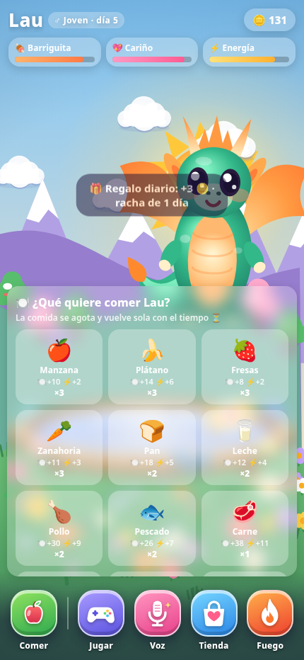
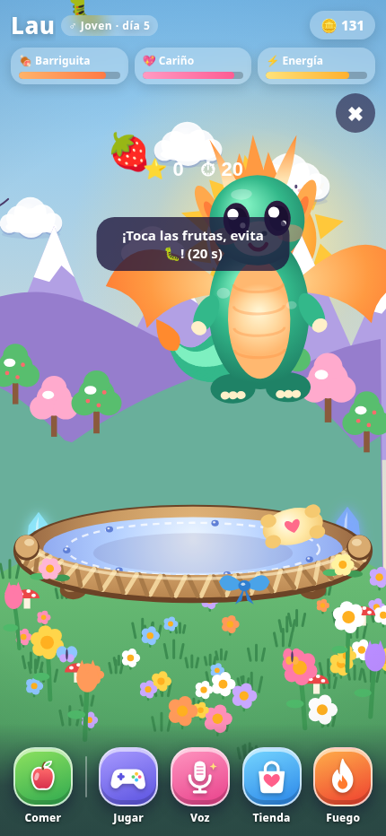

🍎
Comida y cariño
Dale distintos alimentos, acarícialo y mantén su barriguita, cariño y energía en buen estado.
Un dragoncito que crece contigo. Aliméntalo, acarícialo, juega, gana tesoros, personalízalo y descubre su propia personalidad.
Gratis · sin anuncios · sin cuentas · sin compras dentro de la app

Lau mezcla cuidado de mascota, evolución, minijuegos y pequeños detalles que cambian con el paso de los días.
Dale distintos alimentos, acarícialo y mantén su barriguita, cariño y energía en buen estado.
Empieza en el huevo y evoluciona de cría a joven y adulto con el tiempo y la experiencia.
Estrellas, frutas, globos, cesta, parejas, contar y memoria. Juega y consigue monedas para la tienda.
Desbloquea sombreros, ropa, accesorios de cuello y calzado para darle un estilo propio.
Háblale y Lau responde con su vocecita de dragón y sus amigos. El audio se procesa dentro del dispositivo.
Opcionalmente, el cielo y el clima pueden seguir el lugar y la hora real usando una ubicación aproximada.
Estas imágenes fueron tomadas directamente de la versión actual de Lau en un navegador Chromium con formato vertical de móvil.




El progreso se guarda en el dispositivo. No hay cuentas, anuncios, analíticas ni compras. El micrófono solo se usa al activar sus funciones y el clima real es opcional.
Leer política de privacidad
Descarga el APK desde la última versión publicada en GitHub. Android puede pedir permiso para instalar aplicaciones desde el navegador o el gestor de archivos.
⬇ Descargar para Android